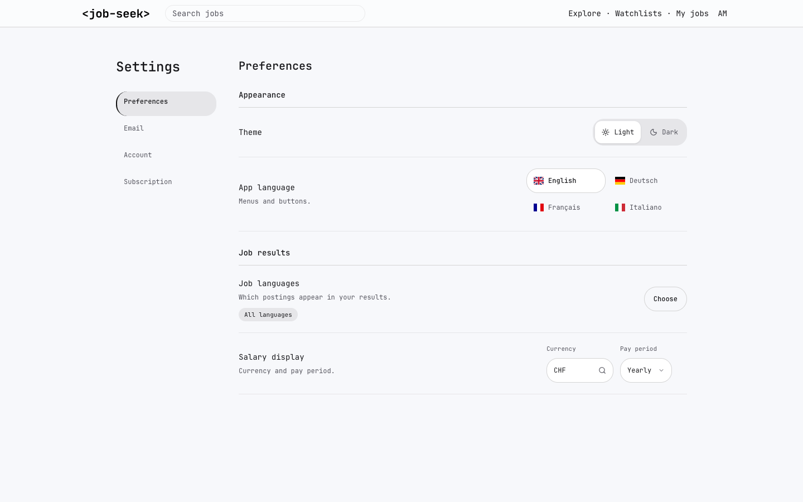
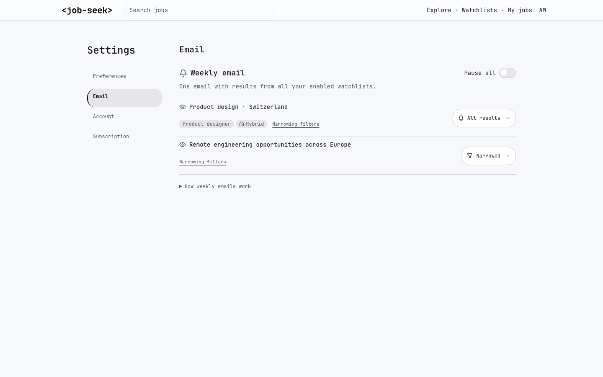
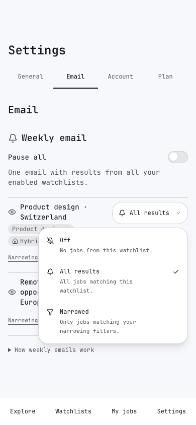
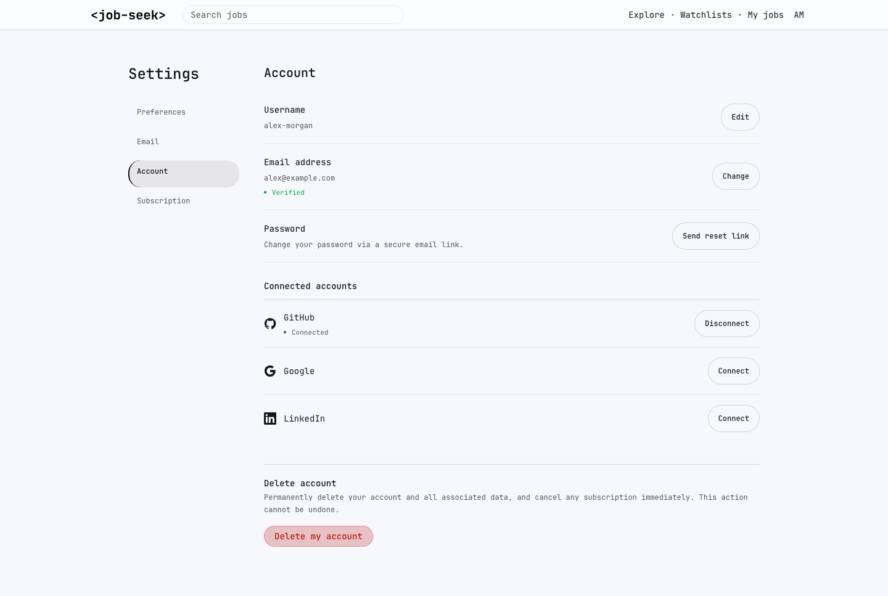
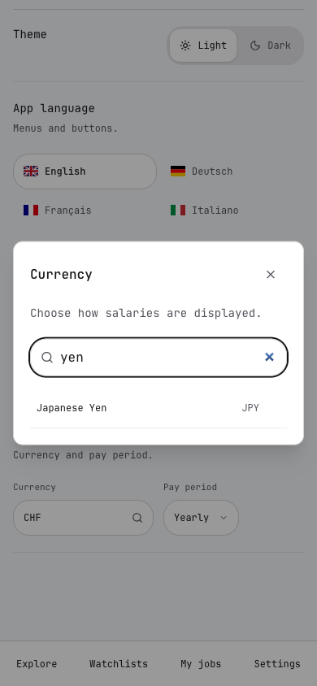
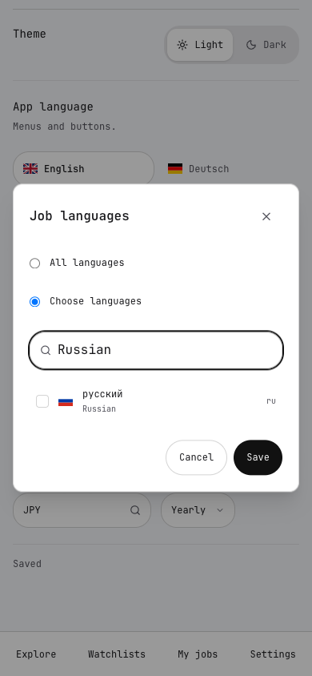
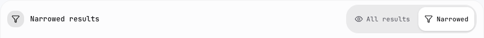
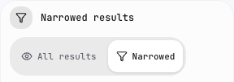
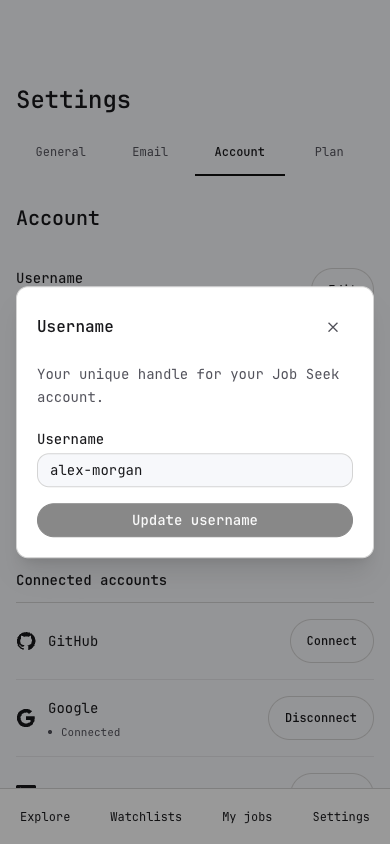

Settings / 01
General defaults and appearance. App language and job languages are separate.

Settings / 02
Identity and scope on the left, a compact notification menu on the right.

Settings / 03
The same control exposes Off, All results and Narrowed with explanations.

Settings / 04
Current values first; editing opens a focused dialog. Provider logos and spaced status dots remain visible.

Settings / 05
Search the server-provided currency catalogue by localized name, English name or code.

Settings / 06
All languages by default. Search native names, localized names, English names or codes. Russian remains selectable without current postings.

Settings / 07
Explicit All results / Narrowed choices; the selected option follows the displayed feed.

Settings / 08
The watchlist control wraps at narrow widths. Settings were checked at 320, 390 and 1440 px in all four locales.

Settings / 09
Existing validation and account actions are retained inside dialogs.
